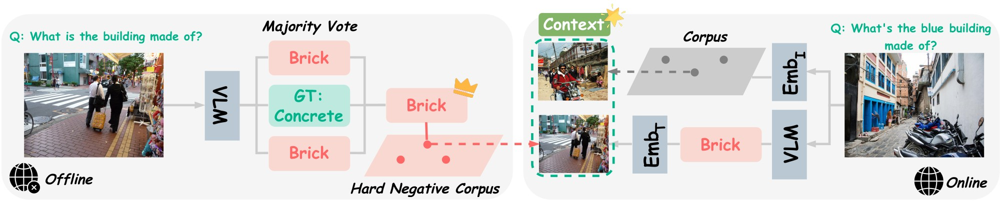
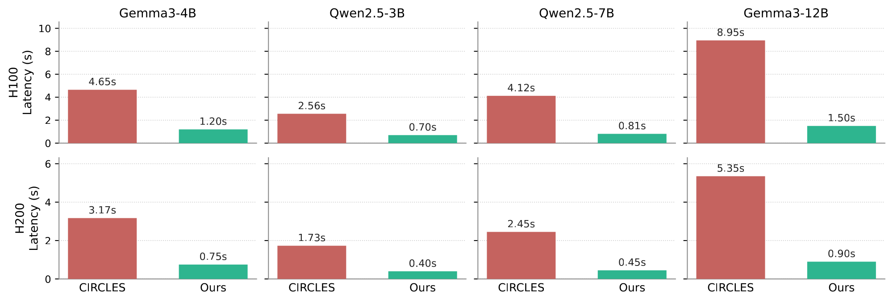
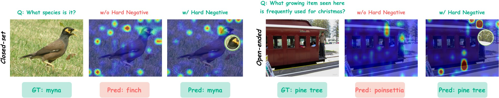

Visual in-context learning (ICL) enables vision-language models (VLMs) to adapt at test time via demonstration examples, but its effectiveness depends critically on the examples selected. Recent counterfactual selection methods improve ICL by constructing demonstrations that expose how individual attribute changes affect the answer. However, they require multi-stage pipelines involving attribute extraction, caption engineering, and composed image matching. We propose a simpler alternative grounded in a key observation: a model's own prediction errors are natural counterfactual demonstrations that directly encode its failure modes. Our method, SMILE (Self-Mined Visual In-Context Learning from Errors), builds a model-specific pool of hard negatives offline by recording the target VLM's own mistakes. At test time, the prediction serves as a direction signal that surfaces, in the semantic embedding space, the past mistakes most likely to recur for the current query. This prediction-conditioned identification provides a unified mechanism for both closed-set classification and open-ended visual question answering without task-specific design. Across four benchmarks and four VLMs, SMILE delivers an average task-score gain of +3.09 points over the SOTA baseline at 5× lower latency.

SMILE mines failures offline and reuses them online as counterfactual demonstrations. Left: the target VLM is run on the labeled corpus; examples whose voted prediction disagrees with the ground truth are stored with both the gold answer and the mistaken answer. Right: for a new query, image similarity retrieves positive demonstrations, while the query's zero-shot prediction is matched in text-embedding space to stored mistaken predictions; the resulting hard negatives are appended to the context before final inference.
Main comparison with both primary metric and F1 reported per dataset. The best and second best scores per model and metric are highlighted.
| Model | Method | CUB | Flowers | OK-VQA | VizWiz | Average | |||||
|---|---|---|---|---|---|---|---|---|---|---|---|
| Acc | F1 | Acc | F1 | EM | F1 | EM | F1 | Score | F1 | ||
| Gemma3-4B | None | 10.56 | 8.19 | 46.76 | 46.50 | 19.12 | 26.70 | 39.85 | 57.26 | 29.07 | 34.66 |
| Random | 9.98 | 8.10 | 37.01 | 39.51 | 24.81 | 30.74 | 51.84 | 67.08 | 30.91 | 36.36 | |
| RICES | 65.40 | 67.62 | 86.70 | 87.43 | 26.65 | 32.72 | 56.08 | 70.40 | 58.71 | 64.54 | |
| MUIER | 65.21 | 67.42 | 86.39 | 87.28 | 26.87 | 32.82 | 56.59 | 70.75 | 58.77 | 64.57 | |
| MMICES | 13.95 | 10.98 | 38.09 | 38.20 | 26.24 | 32.41 | 52.72 | 68.21 | 32.75 | 37.45 | |
| CIRCLES | 71.97 | 72.39 | 93.32 | 93.49 | 31.27 | 36.89 | 57.61 | 71.35 | 63.54 | 68.53 | |
| SMILE (ours) | 72.22 | 72.75 | 96.89 | 96.88 | 35.01 | 39.94 | 69.69 | 76.20 | 68.45 | 71.44 | |
| Gemma3-12B | None | 30.34 | 25.02 | 67.51 | 64.33 | 25.47 | 33.89 | 56.82 | 71.26 | 45.04 | 48.62 |
| Random | 29.27 | 25.82 | 71.28 | 71.56 | 33.59 | 39.56 | 70.13 | 80.54 | 51.07 | 54.37 | |
| RICES | 76.37 | 76.25 | 96.44 | 96.29 | 36.86 | 42.61 | 73.98 | 83.43 | 70.91 | 74.65 | |
| MUIER | 76.51 | 76.39 | 96.42 | 96.28 | 36.58 | 42.30 | 73.72 | 83.04 | 70.81 | 74.50 | |
| MMICES | 36.37 | 31.61 | 71.36 | 69.13 | 35.12 | 40.85 | 71.50 | 81.56 | 53.59 | 55.79 | |
| CIRCLES | 77.03 | 76.90 | 97.77 | 97.75 | 37.75 | 43.23 | 74.30 | 82.35 | 71.71 | 75.06 | |
| SMILE (ours) | 76.98 | 76.89 | 98.85 | 98.86 | 43.67 | 48.29 | 78.58 | 84.40 | 74.52 | 77.11 | |
| Qwen2.5-VL-3B | None | 7.09 | 5.97 | 22.57 | 24.04 | 42.29 | 46.12 | 75.83 | 78.58 | 36.95 | 38.68 |
| Random | 15.81 | 15.63 | 41.76 | 44.57 | 41.54 | 45.30 | 74.48 | 77.40 | 43.40 | 45.73 | |
| RICES | 72.26 | 73.88 | 93.06 | 92.84 | 42.57 | 46.26 | 70.80 | 73.37 | 69.67 | 71.59 | |
| MUIER | 72.25 | 73.87 | 93.06 | 92.83 | 41.66 | 45.82 | 71.61 | 74.74 | 69.64 | 71.81 | |
| MMICES | 17.26 | 15.38 | 33.84 | 35.47 | 39.32 | 42.95 | 73.23 | 76.21 | 40.91 | 42.50 | |
| CIRCLES | 74.89 | 76.34 | 94.70 | 94.77 | 43.24 | 47.27 | 72.93 | 75.33 | 71.44 | 73.43 | |
| SMILE (ours) | 76.75 | 77.75 | 94.79 | 95.25 | 43.75 | 47.53 | 78.26 | 82.72 | 73.39 | 75.81 | |
| Qwen2.5-VL-7B | None | 14.83 | 11.79 | 43.47 | 42.14 | 33.31 | 38.33 | 68.70 | 73.30 | 40.08 | 41.39 |
| Random | 26.27 | 24.42 | 47.15 | 49.74 | 41.66 | 46.20 | 76.11 | 78.34 | 47.80 | 49.67 | |
| RICES | 82.15 | 81.91 | 98.83 | 98.85 | 43.66 | 48.32 | 73.79 | 76.13 | 74.61 | 76.30 | |
| MUIER | 82.14 | 81.90 | 98.93 | 98.95 | 44.29 | 48.76 | 74.67 | 77.08 | 75.01 | 76.67 | |
| MMICES | 34.57 | 29.72 | 49.15 | 47.62 | 43.40 | 47.66 | 70.69 | 72.77 | 49.45 | 49.44 | |
| CIRCLES | 82.17 | 82.13 | 98.99 | 99.04 | 43.54 | 48.53 | 77.63 | 82.36 | 75.58 | 78.02 | |
| SMILE (ours) | 82.55 | 82.30 | 99.33 | 99.37 | 47.80 | 51.61 | 83.42 | 87.49 | 78.28 | 80.19 | |

Per-query inference latency across four VLMs. SMILE is 3.6–6.0× faster than CIRCLES on H100 (top) and 4.2–6.0× faster on H200 (bottom).

Hard negatives concentrate attention on the discriminating region and flip the prediction. Attention from the final prompt token to query-image patches, with vs. without the prediction-conditioned hard-negative block.
@article{zhao2026value,
title={The Value of Being Wrong: Self-Mined Visual In-Context Learning from Errors},
author={Zhao, Shu and Yu, Tan},
journal={arXiv preprint arXiv:2610.16977},
year={2026}
}